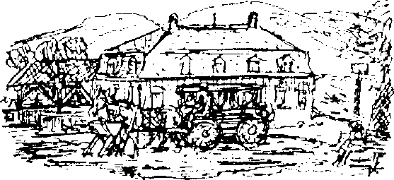

III
Zavallı karım endişe nöbetlerini bir türlü atlatamıyordu. Gözümün önünde soluyor, yanakları giderek çöküyor, her ani seste heyecanla yerinden sıçrıyordu. Böyle yaşamaya devam edemezdik, basıp gitmemizin önündeki tek engel benim Patera’yla hâlâ görüşememiş olmamdı. Onun özel izni olmaksızın Rüya Ülkesi’ni terk etmek imkânsızdı. Arşive’e en az on kere başvuruda bulunmuştum, elime “Bahsi geçen zaman, Huzura Kabul Bürosu’nun istirahat mevsimine tekabül etmektedir,” ya da “Dilekçe sahibine, huzura kabul için öncelikle camiada itibarlı bir konum edinmenin zaruri olduğu pek çok kez izahat edilmiştir. Bu sebeple, intizamlı bir hayat tarzı sürmeli, bunun için de...” vesaire vesaire gibi resmi dille yazılmış birkaç mazeretten başka bir şey geçmemişti. Öfkeden köpürüyordum, arkadaşım Patera’nın, bu bürokratik klişenin zararlarını görmesini sağlamaya kararlıydım. “Bu yüzden pişman olacaklar!”
Eve dönmemizi engelleyen bir şey daha vardı; paramız bitmişti! Evet, bütün paramız bitmişti! Yüz bin marktan geriye tek kuruş kalmamıştı.
Para durumumuzu öğrenince, “Tamam işte, böyle olacağını biliyordum,” dedim karıma. Aslında zavallının suçu yoktu, o yüzden daha fazla feryat edip diş gıcırdatmadım. Hırsızlık olsun olmasın, paramız bitmişti, artık benim kazandıklarımla yaşamak zorundaydık.
Bütün bunlar, Rüya Ülkesi’nde geçirdiğimiz ikinci yılın sonlarına doğru oluyordu. Artık karım, gündüz de korku nöbetlerine kapılıyordu. Mutfak, dairenin arka tarafındaydı, penceresinden mandıranın avlusu görünüyordu. Avlunun ortasında bir kuyu, onun arkasında da birkaç tane ahır vardı.
“Bu kuyu perili,” deyip duruyordu. Tuhaf tıslamalar ve vurma sesleri duyduğunu iddia ediyordu. Ben hiçbir şey fark etmemiştim, fakat karımı rahatlatmak için bir göz atmaya karar verdim, kuyuya gittim. Yarı sağır işçilerden biri gelip kapıyı açana kadar çaldım, Mandıraya bir göz atmak istediğimi söyledim. Yüklü bir bahşiş adamın bütün isteksizliğini geçirdi. Kulübesine dönmeden önce kulağıma haykırarak nereye istersem bakabileceğimi söyledi. Kendi başıma kalınca araştırma yapmakta hiç zorlanmadım. Bir sürü karanlık odadan geçtim. Bina yer seviyesinin oldukça altındaydı, içeri girebilen azıcık ışık da sıkı sıkı kapatılmış küçük pencerelerin kenarlarından sızıyordu. Uzun, ahşap sehpaların üzerinde yassı ve yuvarlak kaplar vardı, köşelerde ahşap tekneler duruyordu. Hepsi ağızlarına kadar sütle doluydu. Yeraltı odalarından birine çeşitli aletler tıkıştırılmıştı. Duvarlarda teneke kaplar, ekmek tahtaları ve tepsiler asılıydı. Avluyu bulmak için acele ediyordum fakat avlu yerine sönmüş ocakların üzerinde dev kazanların asılı olduğu bir sürü karanlık mahzen buldum. Keskin peynir kokusu burnumu sızlattı. Uzun, dar, kötü kokulu, küflü duvarları örümcek ağlarıyla kaplı küçük bir odada duran peynirler sular damlatarak ve kokular saçarak yatıyorlardı. Avlu burada olamazdı, o yüzden geri dönmeye karar verdim, derken bu peynir, süt ve tereyağı labirentinde yolumu kaybettiğimi fark ettim. Yanlış bir yöne döndüm, yeraltı labirentinin hiç kullanılmayan bir bölümüne geldiğimi fark ettim. Kemerli, alçak bir tavanı vardı, dev kancalardan paslı zincirler sarkıyordu. Önümü zor görüyordum ama yapışkan zemin aşağıya doğru hafif eğimli gibiydi. Birdenbire kaygan basamaklarda dengemi kaybettim ve kendimi zifiri karanlıkta buldum. Karanlık bir gecenin ortasında buz gibi mahzen havasındaydım; yukarıda bir yerlerde bir kapının kapandığını duydum. Şükürler olsun ki yanımda birkaç tane kibrit vardı. Sonra birdenbire, uzaklardan gelen bir gürültü duydum. Sanki uzaklarda birisi çekiçle bir şeyler dövüyordu, fakat ses hızla yaklaşmaya başladı. Kibritlerden birini çaktım ve bir geçitte olduğumu gördüm. Dehşete kapılmıştım. Tek düşündüğüm oradan kaçıp, uzaklaşmam gerektiğiydi. Karanlıkta kaçarken kafamı sular damlayan duvarlara çarpıp duruyordum. Yine de arkamdan gelen gürültü giderek yaklaşıyordu, dörtnala giden bir atın sesi gibiydi; korkunç, ritmik bir gökgürültüsüne benziyordu. Elimdeki kibritlerden çıkan ışık giderek zayıflıyor, nemli hava alevi boğuyordu. Gürültü ise giderek yaklaşıyordu, hiç şüphesiz takip ediliyordum. Artık hırıltı ve inilti sesleri de duyabiliyordum. İliklerime kadar ürpermiştim, delirmek üzereydim. Sanki sırtıma kırbaçla vurulmuş gibi ileri atıldım, fakat bir anda gücüm tükendi, dizlerimin üzerine düştüm, neredeyse bayılacaktım. Son kibritlerim yerde titreşerek sönerken ellerimi umutsuzca ve hızla üzerime doğru gelen tehlikeye doğru kaldırdım.
Sonra vahşi takipçim üzerime atıldı. Soğuk bir rüzgâr esti, beyaz, bir deri bir kemik bir atla burun buruna geldim. Karanlıkta tam olarak göremesem de ne kadar feci bir halde olduğunu fark ettim. Dev beygir neredeyse açlıktan ölmek üzereydi, kocaman toynaklarını çaresiz bir güçle savuruyordu. Kemikli boynunu öne uzatarak, kulaklarını arkaya yatırarak hızla yanımdan geçti. Donuk, bulutlu gözlerinin içine baktım; hayvan kördü. Dişlerini gıcırdattığını duyabiliyordum, titreyerek geçip gidişini izledim, sıska sırtında kan pırıltıları vardı. Bu yaşayan iskeletin çılgın koşusunu durdurmaya imkân yoktu. Gümbürtü uzaklaşırken, atın korkunç kemiklerinin görüntüsüyle acı çekerek, el yordamıyla geçitte ilerlemeye başladım. Kısa bir süre sonra uzaktaki bir gaz lambasının ışığını gördüm. Şok geçiriyordum, ışık giderek bulanıklaştı. Dilim tutulmuştu, vücudum sanki taş gibi ağırlaşmıştı. Kriz geçince kendimi ışığa doğru sürükledim. Bir merdiven, sonra başka bir ışık daha gördüm. İnsanların konuştuğunu duydum, girdiğim oda tanıdıktı. Kafedeydim.
IV
İçeri girdiğimi kimse fark etmemişti. Dışarıda hava kararıyordu, sokak lambaları yanmıştı. Kendi başıma arka taraftaki bir masaya oturdum, kafamı toplamaya, yaşadığım korkunç deneyime anlam vermeye, hissettiğim tatsız baş dönmesinden kurtulmaya çalışıyordum. Uzun süre tek başıma kaldım. Beyaz kravatlı, saygın görünüşlü yaşlı bir beyefendi benim oturduğum köşeye gelip yanıma oturdu.
“Burası biraz daha sessiz," dedi.
Cevap vermedim, kafamın içi, hâlâ karmakarışık düşünceler ve görüntülerle kaynıyordu. Bir süre sonra yaşlı adam yumuşak, sevimli bir tonda yeniden konuştu:
“Oradan ilk geçişin olsa gerek. Çok gergin görünüyorsun."
Adama bakmaya başladım, nazik, arkadaş canlısı biri gibi görünüyordu.
“Ne demek istiyorsun?” dedim bitkin bir halde.
“Ne demek istediğimi mi soruyorsun? Beyin fırtınasından söz ediyorum tabii ki. Çevrene bir bak.” Kafenin içini işaret etti.
İçeride bir şeyler olduğunu ancak o zaman fark ettim. Çok müşteri vardı ama kafe çok sessizdi. Herkes yüzünde bitkinlik ve gerginlik ifadesiyle oturuyordu.
“O gördüğüm neydi?” Yeniden korkmaya başlamıştım.
“İnsanların yüzlerine bir bak. Bu arada hepsi geçti artık, merak etme."
Ona güvenebileceğimi hissettim, zararsız ve nazik bir adama benziyordu.
“Sizin başınıza ilk defa geldiğini hemen fark ettim! Bu bir lanet!” İç geçirdi. Müşterilerin hepsi düşüncelere dalmış, sessizce oturuyorlardı, içlerinden birkaçı fısıldaşıyordu. Arada bir yüksek sesle söylenen bir söz duyuluyordu. Odanın ortasında bir bardak kırılmıştı, süpürülüyordu. İki satranç oyuncusu ahşap mankenlere benziyordu, karşılıklı büyülenmiş gi\?i görünüyorlardı. Hiçbir şey bilmediğim için yeni arkadaşımdan olan biteni anlatmasını istedim. Duyarlı, tuhaf gözleri ve gözleriyle uyum içindeki güzel bukleleriyle altmış yaşlarında olmalıydı.
“Rüya Ülkesi’nde uzun süredir yaşamıyorsun herhalde?”
“Neredeyse iki yıl oldu.”
Garsona işaret ettim, artık tamamen kendine gelmiş olan Anton bir brendi getirdi. Kafe giderek normale dönüyordu. Yaşlı adam sözüne devam etti:
“Farklı bir şeye alıştıktan sonra ayakların üzerinde durmakta zorlanman elbette çok normal. Burada hepimiz büyünün etkisindeyiz. Sevsek de sevmesek de, hepimizin içine işleyen, karşı konulmaz bir kader var. Kaderimiz daha kötü olmadığı için halimize şükretmeliyiz. En azından şimdilik dünyada olup biten saçmalıklara gülüp geçebiliyoruz. Fakat kaderine boyun eğmeye yanaşmayan bir sürü -kim bilir kaç tane- insan var, özellikle yeni gelenler boşu boşuna karşı koymaya çabalıyorlar. Değişmez kaderimize karşı gelmeye çalışanların sayısı artınca Beyin fırtınası geliyor, herkes acı çeker. İşte bu da öyle bir gündü.”
Sessizleşti. Yüzünde üzüntülü, olanları kabullendiğini gösteren bir gülümseme belirdi. Konuşamıyordum. İşte bir gizemin esiri olmuştum, belki de beni uzun süredir rahatsız eden bir gizem karşımdaydı. Sonra yaşlı adama başıma gelen tuhaf ve nahoş olayları anlattım, kısa bir süre önce başımdan geçen, kalbimin hâlâ hızla atmasına neden olan korkunç esrarı bile ondan saklamadım. Her şeyi anlattım.
Arkadaşım düşünceli, ilgili bir ifadeyle beni dinledi. Başını hafifçe sallayarak bana doğru eğildi, “Sevgili genç dostum, boşu boşuna kendine işkence ederek iç sesinle savaşma. Haklısın, çevremiz gizemlerle dolu, fakat bunlar çözülemeyecek esrarlar. Çok meraklı insanların canı yanar. Teselliyi işinde ara, Pearl çalışmak için mükemmel bir şehir. Ben de eskiden senin gibi hissederdim. Karşında bir doğa aşığı duruyor, bu ülkenin yapaylığının bana ne kadar çok acı verdiğini söylediğimde eminim bana hak vereceksin. Fakat insan zamanla alışıyor. Neredeyse on üç yıldır burada yaşıyorum, yaşam şartlarına alıştım, ilgimi çekecek pek çok şey buldum. İnsan sadece çıtasını birazcık alçaltmalı, o kadar. En küçük şey bile insana zevk verebilir. Örneğin; ben güve topluyorum, toz güvesi.” Gözleri parladı, hareketlendi, yüzünde gizemli bir gülümsemeyle konuşmaya devam etti. “Yeni bir türün peşindeyim. Evet, Arşiv’de hoi polloi’nin hayal bile edemeyeceği kadar çok bilgi var. Şu sırada 69 numaralı oda benim av alanım. Majesteleri odayı bana bahşetme yüceliğini gösterdi. Bütün umudum orada! Artık gitmem gerek.”
Bunları söyledikten sonra cebinden eski, yeşil bir kutuda duran kemik çerçeveli gözlüğünü çıkarıp taktı. Gitmeden önce bana eski moda bir selam verdi ve kendisini tanıttı; “Profesör Korntheuer, zoolog.”
Gidişini izlerken ondan hoşlandığımı hissettim. Her şeyini sevmiştim, egzantrik tavırlarını, gençlere özgü bir hevesle dolu sevimli yüzünü çevreleyen gür, kar beyazı buklelerini, gri dizliklerine ve galoşlarına kadar tertemiz olan titiz giyimini çok sevmiştim.
Fakat gün boyunca başımdan geçen heyecanlı olaylar beni çok yormuştu. Dairemizin merdivenlerini çıkarken başım ağrıyordu. Daireyi beklediğim gibi buldum. Karım bitkinlikle kendinden geçmiş, koltuğa uzanmıştı. Hiçbir şey sormadı, benim hatırım için kendisini toplamaya çalıştı. Yalan söylemek istemediğimden sessiz kalmayı tercih ettim.
Yatakta rahatsız bir biçimde bir o yana bir bu yana dönüp duruyordum. Gümbürtüler duyduğumu, faltaşı gibi açık boş bir göz gördüğümü hayal ediyordum. Aklım Profesör’den öğrendiklerimle doluydu. Demek bir Büyü vardı. Peki ya Beyinfırtınası? Bu kelimelerin anlamını uzun uzun düşündüm. Burada başımdan pek çok tuhaf olay geçmişti. Daha geçen gün evin arka tarafında davullar ve zillerle yaygara koparan bir grup çocuk görmüştüm. Ne yaptıklarını sorduğum zaman “Arka plan gürültüsü yapıyoruz,” demişlerdi. Artık saçmalıkları rahatsız edici bulmaya başlamıştım, her şeyde bir tımarhane havası vardı. Başlangıçta her şey yeniydi, pencere kenarlarına oturur, aşağıda oluşacak grotesk manzaraları beklerdik. Fakat son birkaç aydır hiçbir şeye gülemez olmuştuk. Karımın sağlığı yavaş yavaş bozulmaya devam ediyordu. Ayrıca tuhaf olaylar giderek artıyordu. Kanının hayatını riske atmamak için ondan pek çok şeyi gizlemem gerekiyordu. Bu yüzden kuruntularımı içime atıyor, kendimi sürekli keyifsiz ve huzursuz hissediyordum. Başımıza neler gelecekti? Kendimi yiyip bitiriyordum.
V
Birkaç gün sonra dışarı çıktım. Yılbaşı yaklaşıyordu fakat kış mevsiminin olmadığı bu ülkede bunun bir önemi yoktu. Tanıdık binaların önünden kaçarcasına geçtim. Pearl’de herkes özel bir yürüyüş şekli edinmişti; sessizce, duraklayarak, kararsız, her an kötü şeyler olmasına hazır bir tavırla yürüyorlardı. Yolumu birkaç yalnız sokak lambası aydınlatıyordu. Gerçek Rüya Ülkesi aydınlatması buydu işte! Her şeyi silikleştiren ve dev boyutlarda gösteren genel karanlığın arasında doğal olmayan detaylar görüyordum; bir karakol, bir dükkan tabelası, bir kapı.
Eski Gotik manastırdan çıkıyordum, manastırın bir kanadında çocuk hastanesi vardı. Karım için kuvvet olsun diye iki şişe iyileştirici etkisi olan şarap almıştım. Manastırın bitişiğindeki kilisenin önünden geçerken kemerli geçidin altında siyah bir insan yığını gördüm. Anlaşılmaz birkaç kelime söyledi ve elini yalvarırcasına uzattı. Düşünmeden karanlık köşeye birkaç kuruş attım, ama bir an sonra olduğum yere çakılıp kaldım. O pis giysilerin arasında ne kadar da tuhaf bir kadın yüzü vardı! Daha yakından bakmak zorundaydım, gizemli bir güç beni buna zorluyordu. İsteksizce, iğrenerek yaşlı kadına doğru eğildim. Beni etkileyen kokan nefesi ya da dişsiz ağzı değildi, iki korkunç, parlak gözüydü; adeta zehirli bir yılanın dişleri gibi beynime saplanıyorlardı. Kendimden geçmiş bir halde eve vardım. Gördüğüm gerçek miydi, yoksa son zamanlarda fazla çalışan hayal gücümün bir ürünü mü? Sanki dipsiz bir kuyuya bakmıştım.
Böyle krizler yorgun sinirlerime ağır geliyordu. Hemen ertesi gün gidip Patera’yı görmeye karar verdim. Eğer gerekirse çığlıklar atacak, zorla huzuruna çıkacaktım. Arkadaşımdı, beni o davet etmişti, acı çekip çekmememiz onun elindeydi. Rüya Ülkesi’nin beyinsiz insanları onun hakkında çok yanlış düşünüyorlardı. Neden adını her söyleyişimde o kadar ürkek ve çekingen davranıyor, kaçamak yanıtlar veriyorlardı ki? Arkadaşım bunları haketmiyordu.
Çok kötü bir gündü. Karımın migreni tutmuştu, inleyerek yatıyordu. Başına soğuk kompres yaptım, sonra ben de bitkin bir halde yatağa uzandım. Sonra, sabah saat bir sularında dairemizin kapısı çalınmaya başladı. “Yan evdeki sarhoş olmalı,’’ diye düşündüm öfkeyle. Bir süre sonra adımı söyleyerek bana seslenmeye de başladı. Düşüncesizliği canıma tak etmişti artık, yataktan fırladım, sabahlığımı üzerime geçirip odanın köşesinden yürüyüş sopamı aldım. Ona unutamayacağı bir ders verecektim! Kapıyı açtım, karşımda durmuş, bira kokulu soluğunu suratıma üflüyordu. Hiç sigaram kalmış mıydı? Sadece ödünç istiyordu, neden onun dairesine konuk olmuyormuşum, karım da davetliymiş, sıcak şarap yaparmış..
Öfkemi kontrol etmekte güçlük çekiyordum. “İnanılmaz bir şey bu! Utanç verici tavırlarınızı kendinize saklasanız olmaz mı? Seni merdivenlerden aşağı yuvarlamadan önce gözümün önünden kaybol serseri!” diye gücümün yettiği kadar bağırdım. Öfkeden kuduruyordum. Boş, sarhoş bir kahkaha attı ve “Hadi, bana konuk olun,” diye tekrarlamaya devam etti. Konuşurken bir yandan da kolumu yakalamış çekiştiriyordu. Kendimi kaybettim. Midesine bir tekme savurdum, yere yuvarlandı. Adamdaki terbiyesizliğe bakın! Kafam bir anda düşüncelerle dolmuştu.
“Artık gerçekten şikayetçi olacağım, bunu ertelemeyeceğim, ya adaleti sağlarlar ya da...! Bu karmakarışık çöplüğe artık tahammül edemiyorum!" Halimi anlayabilirsiniz. Haftalardır korkunç şeyler yaşamıştım, karımın sağlığı konusunda çok endişeliydim, paramız bitmişti, çevremde sadece düşman ve aksi yüzler vardı. Rüya Ülkesi’nden şiddetle nefret etmeye başlamış, kendimi kaybetmiştim. Öfkeden titreyerek medivenlerden aşağı indim ve Saray’a doğru koşmaya başladım. Bunca zamandır başıma gelen aşağılayıcı olayları birilerine ödetmeye kararlıydım. Patera’yı yatağından kaldırmam gerekse de yapacaktım bunu. Uzun Cadde’den koşarak geçip Büyük Meydan’a vardım. Şehre sis inmişti, gaz lambalarının alevleri sarı lekeler gibi görünüyordu. Çevrede kimse yoktu, sadece ıslak, kirli taşları görüyordum. Adeta delirmiştim, sürekli olan biteni Patera’ya nasıl anlatacağımı düşünüyordum. Yüksek sesle suçlamalarımı bir bir sayıyor, hiç düşünmeden güzel sözler buluyor, halimi anlatacak dokunaklı kelimeler düşünüyordum. Üşümeye başlamıştım. Kendime baktım, bir beyefendiyi ziyarete gitmek için hiç de uygun giyinmediğimi fark ettim. Üzerimde sadece çiçek desenli sabahlığım, onun altında ince bir gecelik ve tek ayağımda da bir terlik vardı, diğerini koşarken düşürmüştüm herhalde. Koşuyordum. Büyük Meydan’da sis biraz daha hafiflemişti. Saray, dev bir küp gibi gökyüzüne doğru uzanıyordu. Saat kulesinin üzerindeki parlak yuvarlak aya benziyordu. Nem ve soğuk beni kendime getirdi, planımın ne kadar da aptalca olduğunu anladım. Şikâyette bulunmak için ne doğru zamandı, ne de durumum buna uygundu. Sabahın birinde şapkasız, üzerimde gecelik, elimde yürüyüş sopasıyla kim bilir neye benziyordum. Kendime geldim ve eve dönmeye karar verdim. Dar ara sokaklardan geçerek kestirme bir yoldan gitmeye karar verdim, soğuk giderek artıyordu, ben eve dönene kadar karım merak edecekti. Fakat yarın, yarın ödeşme günü olacaktı! Isınmak için yavaş yavaş, düzenli adımlarla koşmaya başladım. Karşımda ışıklı bir pencere belirdi, ona doğru yöneldim. Müzik, çınlayan bir piyano, kaba sesler, şarkılar! Sokağın karşısında bir ışık şeridi vardı. Tanrım! Beni kimse böyle görmemeli, diye düşündüm. Fakat çoktan fark etmişlerdi bile.
“Hey sen ordaki! Buraya gel!” Şüpheli tipler bana doğru yaklaşıyordu. Artık yanlış bir yola saptığımı biliyordum. Fransız Mahallesi’ne gelmiştim.
Orada insanlar hâlâ ayaktaydı, ben de bir anda ilgi odağı olmuştum. Rahatsız olmuş ve utanmıştım, tuhaf halime gülüyorlardı. Küfür ederek yoluma devam ettim, peşime bir sürü insan takılmıştı. Kaba şakalar yapıyorlardı, bütün bunların sonunun ne olacağını . anlamıştım. Çok utanç vericiydi; bu karanlık sokaklarda ve çıkmazlarda yolumu bulmam mümkün değildi. Castringius olsa hiç zorlanmazdı. Keşke karakolun nerede olduğunu bilseydim fakat tek gördüğüm kirli batakhaneler ve pis mezbelelerdi, oluklardan kötü kokular yükseliyordu. Elimden geldiği kadar hızlı. ilerliyordum. Makyajlı bir adam sabahlığımın ucunu yakaladı ve çekti. Çat! Suratının ortasını tokatladım. Keşke yapmasaydım, çünkü asıl kovalamaca şimdi başlamıştı. Bağırıyor, haykırıyor ve peşimden koşuyorlardı. Şişman, dev bir kadın yoluma çıktı ve beni durdurmaya çalıştı. Onu kolayca geçtim, fakat bu arada sopamı da düşürdüm. Çamurlarda yuvarlanıyor, ganimet bulmuş gibi geceliğimin ucunu çekiştiriyordu. Sendeledim, fakat artık bir ölüm kalım savaşı verdiğimin farkındaydım. Delirmiş bir köpek gibi hızla koşuyordum. Daha önce kendi gücümden hiç bu kadar emin olmamıştım. Fakat arkamdaki gürültü giderek yükseliyordu, Fransız Mahallesi’nin yarısı peşime takılmıştı. Kulak delen ıslıklar çalınıyor, yer giderek kayganlaşıyordu, düşmemek için çok dikkat ediyordum. “Birazdan yorulacağım, kaçamayacağım,” diye düşündüm, korkuyla koşuyordum. Dar sokaklarda bir o yana bir bu yana kaçıyordum, kalabalık arkamdan şişeler ve bıçaklar fırlatıyordu, bütün gücümle “Yardım edin! Polis yok mu?" diye haykırıyordum. Yardımıma kimse gelmedi, arkamdaki çete alayla gülüyordu. Nefes nefese, çıplak ve umutsuz bir halde uçarcasına kaçıyordum. Hiçbir yerde bir sığınak yoktu! En sonunda, iyice yorulmaya başlamışken, uzun, dar bir bina gördüm. Sokağın sonundaydı, bütün ışıklar yanıyordu, girişte kırmızı kâğıttan bir fener asılıydı. Kapı açıktı, parlak ışıklarla aydınlatılmış merdivenlerden yukarı koştum. Duvarlar canlı renklere boyanmış, palmiye ağaçlarıyla dekore edilmişti. Birinci katta kadının biri bana doğru gelmeye başladı, muhteşem bir görüntüsü vardı; uzun, parıldayan, gümüş rengi bir gecelik giymişti, saçları açıktı, harika kolları vardı. Halim onu pek de şaşırtmadı, “Beni arıyor olamazsınız! Bir yanlışlık yapmış olmalısınız, beyefendi. Beş numaralı oda burası.”
Arkadaş canlısı tavrı beni çok memnun etti ve utandırdı. Soluksuz bir biçimde kekeleyerek özür diledim, çıplaklığımı ellerimle örtmeye çalışıyordum. Sonra işaret ettiği odaya girdim. Kahretsin, içeride iki tane daha çırılçıplak insan vardı. Kapıyı hemen yeniden kapattım. Şimdi gürültülü takipçilerim merdivenlerdeydi. En önde bir polis vardı, kükreyerek; “Nerede o adam? Bunu rapor edeceğim. Bu evi de kapattıracağım,” diye öfkeyle haykırıyordu. Arkasından çete geliyordu. Güzel kurtarıcım ortadan kaybolmuştu, kanayan ayaklarım ağırlaşmıştı. Derin bir nefes alarak birkaç basamak daha tırmandım, büyük harflerle yazılmış bir yazı gördüm, beklediğim kelimeler bir emir gibi karşımdaydı; Buraya gir. Takdir-i ilahi bir kere daha yardımıma koşmuştu. Kalan gücümle kapıyı açtım ve arkamdan sürgüledim. Şimdilik güvendeydim, fakat kalabalık çoktan kapıya varmış itekliyordu. “Aç! Kapıyı aç!” çığlıkları yükseliyordu.
Avcılardan kaçan bir hayvan gibi etrafıma baktım, sonra bir anda umutsuz bir fikir beliriverdi aklımda. Düşüp ölmek riskini göze alarak dar bir pencereden dışarı süzüldüm ve tutunacak bir şey aradım. Evet! Bir kablo bulmuştum. Şimdi inanılmaz bulduğum bir güvenle, kabloya tutunarak yere indim. Etrafımda sadece sessizlik ve karanlık vardı. Yere yığıldım, bacaklarım artık bedenimi taşıyamıyordu.
Bir çöp yığınının üzerinde yatıyordum. Gecelik turunu atan bir tezek arabası beni alıp iğrenç kokulu kasasında eve götürdü. Karım, geldiğimi pencereden görmüştü. On beş dakikadır meraktan ölüyordu, ben gideli ancak o kadar olmuştu.
Birkaç gün sonra sokaktaki köpeklerin üzerinden kordonlar ve püsküller sarkan renkli bir şeyle oynadıklarını gördüm. Rüya Ülkesinin sokaklarında dolaşan o eski püskü şey benim sabahlığımdı. Patera’nın yarattığı ülkeye olan hayranlığım artık çok gerilerde kalmıştı.
VI
Sonraki birkaç gün boyunca şikayette bulunma kararımı uygulamaya koymadım. Her şey çok kötü gidiyordu. Şişen ve parçalanan ayaklarım bandajlanmıştı, karım da sürekli yatıyordu.
Lampenbogen Evinin arka tarafındaki bodrumda yarı aç yaşayan dokuz çocuklu bir aile vardı. Dokuz tane çocuk! Pearl’de eşi benzeri olmayan bir durum! Zamanını salonları dolaşarak ve kavga çıkararak geçiren adama, sürekli hamile, sıska karısı bakıyordu. Artık ev işlerimizi de o yapıyordu, maymun sadece akşamüstleri ziyaretimize gelebiliyordu. Ancak o zaman birkaç saat rahat edip dinlenebiliyorduk. Karımın yatağının kenarına oturur, örgüsünü ayaklarıyla tutar ve hızla örerdi. Bir yandan örgü örerken bir yandan da ellerinde tuttuğu Rüya Aynası'nın eski sayılarına bakmaktan hoşlanırdı.
Yeni yardımcımız en büyük iki kızını da sık sık 'yanında getirirdi, bu sayede Rüya Ülkesi’nde doğan çocukların sol ellerinin baş parmağının üst kısmının olmadığını söyleyen karımın iddiaları doğrulandı. Rüya Aynası editörünün küçük kızında da aynı eksiklik vardı, Konsül Başkanı olan Ekselansları’nın iki oğlunda da. Yardımcımız sevgili Frau Goldschlager’ın dokuz çocuğunun da baş parmağı eksikti demek ki.
Ayağa kalkar kalkmaz ilk iş gidip doktoru gördüm. Karımın nabzı çok hızlı atıyordu, bu hiç hoşuma gitmiyordu. Pek çok kez Lampenbogen’ı çağırmayı düşündüm. Ev sahibimiz olduğu için çağırdığımızda gelebilirdi, doktorlara hiçbir zaman güvenmernişimdir, özellikle bu neler olduğu belirsiz ülkede her zamankinden daha dikkatli olmak gerekiyordu. “Bir doktor da herkes gibi bir iş . adamıdır," diyordum kendi kendime. “Bir ayakkabıcıya ayakkabı ısmarladığınız zaman, parayı ayakkabıları teslim etmeden önce isterse güler geçersiniz, öyle şey olmaz. Ama yardım etse de etmese de, hatta hastayı daha kötü bir duruma getirse de doktora ödeme yapmanız gerekir." Lampenbogen zengin bir adamdı, güzel bir villası, güzel bir kansı, bir arabası ve bir çift atı vardı. Dairelerini kiraya verdiği apartmandan da iyi para kazanıyordu, lüks bir hayat yaşamasına ve kaymak tabakadan olmasına şaşmamak gerek. Elbette, karısının kaprisli bir kadın olduğu da söyleniyordu. Oysa ben, köşeme çekilmiş iki yakamı bir araya getirmeye çalışıyordum.
En sonunda doktoru çağırdım. Kalın kürk mantosunun içinde, yürüyen bir küp gibi kapıda belirdi. Karımı muayene ederken ben de hayranlıkla boynunun arkasını inceliyordum. Bir yamyam gibi “Ne kadar da leziz bir boğum," diye düşünüyordum. Bize hava değişimi önerdi. Birkaç haftalığına dağ havası almamızı tavsiye etti. Benim de görünüşümü pek beğenmemişti. İlk önce Patera’yı görmek istediğimi söylediğim zaman, “Bu fikri unutsanız iyi olur,” dedi ve gitti.
Eşyalarımızı toplayıp gitmeye hazırlandık. Frau Goldschlager karımı bir tekerlekli sandalyeyle Meydan’a götürdü. Orada, postanenin önünde bizi atların çektiği bir otobüs bekliyordu. Otobüse yerleştik ve yola çıktık. Geriye baktığımda gördüğüm son şey Frau Goldschlager’ın sallanan kamı ve her zaman solgun yüzündeki veda gülücüğü oldu.
Pearl’den çıkar çıkmaz tren raylarını geçtik. Dağlardaki küçük bir köyde, bir ormancının evinde rahat odalar bulabileceğimizi söylemişlerdi, oraya gidiyorduk. Bakımsız yol, çirkin bataklıkların arasından dolaşıyordu. Eski zamanlardan kalma antik bir kent yıkıntısının yanından geçtik. Gördüğümüz tek canlı topluluğu birkaç tane pelikandı. Bu boş topraklardan sonra, kır bölgesinde daha çok yerleşim birimi vardı. Geniş çayırlar, patates tarlaları, hatta üzüm bağları bile gördük. Saz damları zamanla kararmış büyük çiftliklerin yanından geçtik. İnsanlar her yerde geçişimizi seyrediyor, bize el sallıyorlardı. Deri giysiler içindeki bu sert kır insanları evlerinin önündeki sıralarda oturuyor, bazıları en az kendileri kadar kaba görünüşlü ahşaptan oyma heykeller yapıyordu. Pek çoğunu çömelmiş hayvanlara benzettim, fakat onları şehir halkından daha çok sevmiştim. Daha rahat görünüyorlardı, daha az kaygıları vardı sanki. İşte buralarda tuhaf, mistik gelenekler ortaya çıkıyor, hâlâ bu geleneklere inanılıyor, bu geleneklerin gerekleri hâlâ harfi harfine yerine getiriliyordu.
Yol ikiye ayrılıyordu. Yol ayrımının ortasında fresklerle kaplı bir şapelin üzerinde, bir parmak gibi yukarı yükselen bir kule vardı. “Sağ yol, Büyük Tapınak’a gider,” dedi arabacı, kamçısıyla işaret ederek. Şimdi dar bir vadinin yanından geçiyorduk. Yükseklerdeki sarp kayaların üzerindeki gri kulübeleri zar zor seçebiliyorduk. Orada münzeviler yaşıyordu, en azından ben öyle duymuştum. Hava giderek kararmaya başladı. Bulutlar alçalarak sanki bir fırtınaya hazırlık yapıyormuş gibi sarımsı kahverengi kütleler haline geldiler. Manzara her yerde ağırbaşlı bir görkemle doluydu. Cevher Dağı’nın eteklerindeydik. Çok büyük manyetik boşalımlar yüzünden yılın belirli zamanlarında tehlikeli bir bölge haline geliyordu bu dağ. Gerilim bugün de çok fazlaydı, metalik zirvenin çevresindeki şimşekleri görebiliyorduk. Arabacı, “Dağın neredeyse tamamı demirdendir,” diyerek bilgi verdi. Tuhaf bir yerdi, dağın üzerinde hiç bitki yoktu, hatta kuru çalılar ya da soluk çimenler bile görmek mümkün değildi. Orada duruyor, koyu pas rengiyle vadinin önünü kapıyordu.
Birdenbire karım gitmeyi reddetmeye başladı. Hava burada şehirdekinden bile daha bunaltıcı, diyordu, böyle bir yerde kalmanın sağlığına iyi geleceğini hiç sanmıyordu. Ben de aynısını hissediyordum, havadaki elektrik yüzünden saçlarım diken diken olmuştu. En iyisi hemen geri dönmekti. Tek pişmanlığım hasta karımı buralara kadar sürüklemekti. Yol kenarındaki bir hana yerleştik, otobüsün geri dönerken bizi almasını bekleyecektik. Karımın ateşi iyice yükselmişti. Hancı ve karısı bize ellerinden geldiği kadar yardımcı oldular, bir at arabasına binmemize yardım ettiler.

Böylece geri dönmek üzere yola koyulduk. Bataklıklara vardığımızda hava tamamen kararmıştı. Bataklıklardan çok güçlü bir çürük kokusu yükseliyordu. Arabanın ışığında birkaç tane Müslüman mezarı gördüm, tepelerinde sarıklar olan mezar taşlarının yansı köpüren bataklık sularına gömülmüştü. Havadaki nem nefes almayı güçleştiriyordu. Hışırtılar ve gürültüler duyuyorduk, sanki bataklık iblisleri uyanmıştı. Karım titreme nöbetleri geçirerek yanıma büzüldü. Şehre döndüğümüzde saat sabahın ikisi olmuştu. Karımı ölmesi için geri getirdiğimi biliyordum.
VII
Ertesi gün yolculuğumuzun başarısızlığını anlatmak için doktoru bulmaya gittim. Villasında yoktu. Eve dönerken yolda iki adam gördüm. Önümde ilerliyor, Uzun Cadde’ye dönen bir kadını takip ediyorlardı. Sonra iki adamı da tanıdım. Biri öğrenci komşum, öbürü de de Nemi’ydi. Aynı kadını takip ettiklerini yeni anlamışlardı. Gözlerimin önünde biribirlerine girdiler, fakat neler olup bittiğini tam olarak göremedim. İkisinin birlikte karanlık bir kapı girişine doğru yöneldiklerini gördüm, bir an sonra öğrencinin şapkası, karanlıktan fırlayarak çamurlu sokağa uçtu. Tanınmamak ve işlerine karışmamak için hemen sokağın karşısına geçtim. Takip ettikleri hanım kaldırımda durmuş, bir kitapçının vitrinine bakıyordu. Onu daha önce görmüştüm sanki! Uzun boyluydu, çok şık giyinmişti, kestane rengi saçlarını topuz yapmıştı. Sırtı bana dönüktü. Takip edilmiş olduğunu anlamış olamazdı, çünkü birdenbire dönüp geldiği yöne, yani bana doğru yürümeye başladı. Frau Melitta Lampenbogen’dı bu. Adeta havada uçar gibi yürüyüşünü hayran hayran seyrettim. Sonra bakışlarımız karşılaştı. Bembeyaz bir boşluğa bakıyor gibiydim, sanki kafama bir darbe yemiştim. Yaşlı dilenci kadının gözleriydi bunlar!
O gece çok kötü geçti. Merdivenlerde sürekli bir aşağı bir yukarı gidip gelen insanların gürültüsü vardı. Uyumaya imkân yoktu. Bir dedikodu kulaktan kulağa dolaşıyordu. Değirmencilerden biri ortadan kaybolmuştu, genç ve her zaman neşeli olan. Kardeşi tarafından öldürülmüş olabileceğinden şüpheleniliyordu. Kesin bir bilgi yoktu.
Castringius “İki polis değirmeni baştan aşağı aramış,” dedi fısıltıyla. Rüya Aynası’ndaki işini geri istiyordu, sansasyonel materyal bulmak için deli oluyordu. Bu olayın karakalem bir resmini yaptı, adını “Öğrencinin Yarası” koyduğu resim postayla geri gönderildi.
Zor durumda kalmıştım. Frau Goldschlager işe gelmemişti, tavşan yuvasına benzeyen evine gidip onu görmeye karar verdim. Oda berbat durumdaydı, özellikle içeriye sinmiş olan koku çok korkunçtu. Kapıdaki bir ebe tarafından durduruldum. Frau Goldschlager gece düşük yapmıştı. Bu yüzden, Hector von Brendel ayak işleri için kendi uşağını -yaşlı, gri bir yağ teknesiydi uşak- kullanabileceğimi söyleyince çok mutlu oldum. Üç gündür, yani karımın durumunun ne kadar kritik olduğunu anladığımdan beri sersem gibiydim. Bütün öfkem ve heyecanım yok olmuştu. Kafam her zaman çok dağınıktı, tek yapabildiğim kurşun gibi ağır ayaklarımla kendimi oraya buraya sürüklemekti. Bitkin, öfkeli, dayak yemiş bir sokak köpeği gibi, içimdeki huzursuzluk yüzünden hiçbir yerde duramıyordum. Evin içi dayanılmazdı. Oturup öylece karımın başına gelenleri seyretmem mümkün değildi, kalbim parça parça oluyordu. O zaman dışarı çık da temiz hava al! Kafenin uzağından geçtim, nehir kıyısına doğru yürümeye başladım. Sessizce akan nehrin kenarı şehrin en sevdiğim yerlerinden biriydi. İstemeye istemeye değirmene bakmaya başladım. Sanki canlıymış gibi titriyordu. Bulanık ışıkta, jelatin bir tabakanın arkasında duruyor gibiydi, dalgalı ve silik görünüyordu, bütün vücudumun baştan aşağı titremesine neden olan gizemli bir havası vardı. Kirli bir camın arkasında duran değirmenci, yüzünde karanlık bir ifade ve nefretle beni izliyordu. Binalarla dolu sokaklardan çıkmış, inşaat alanına girmiştim, yük arabaları ve tuğlalarla doluydu. Farkında olmadan mezarlığa gelivermiştim. Durup bir sigara yaktım. Oymalı demir kapının arkasındaki mezar taşlarını gördüm. Ürperdim. Dişlerimi gıcırdatarak bilmediğim sokaklarda koşmaya başladım. Melankoli beni ele geçirmeye çalışıyordu fakat onu aklımdan silip attım. Herkes ve her şeye karşı soğuk bir kinle dolmuştum.
Koşarken, “Nerede saklanıyorsun, zalim?” diye boş bahçelere haykırdım. Fakat yapraksız çalılar ve çıplak ağaçlar hiç yanıt vermedi. Çamur birikintilerine aldırmadan koşmaya devam ettim. Her yanım alev alev yanıyordu, daha önce hiç görmediğim meydanlara ve arka sokaklara doğru koştum. Bir at tarafından çekilen zavallı görünüşlü bir tramvay dikkatimi çekti, kullanılmak için değil, dekorasyon olarak yapılmıştı sanki. Pearl’de bu tür bir taşıma aracını ilk defa görüyordum, fakat kafam çok karıştığı için durup düşünmedim, nereye gittiğimi bilmiyordum, fakat ayaklarım beni Saray’ın önüne getirmişti. Lambalar yeni yakılıyordu.
Köşe sütunlarından birinin üzerindeki mermer levha hemen dikkatimi çekti.
Bütün vatandaşlarımız Her gün saat 4 ve 8 arasında Patera ’yla görüşebilir
Başımı sallayarak yazıyı tekrar tekrar okudum, alçak sesle kendi kendime de mırıldanıyordum. Aklıma aptalca bir düşünce geldi. “Bu sadece bir şaka, biz de şaka olduğunu anlamayacak kadar aptalız.” Kahkaha nöbetine tutulmuştum, o an Patera’yı öldürebilirdim. Bir sütuna yaslanarak kendimi topladım, sonra sanki sıradan bir iş yapıyormuşçasına kapıdan içeri girdim. Geniş merdivenleri tırmandım -kubbeli tavanın büyüklüğü karşısında ufacık görünüyor olmalıydım- ve yukarı baktım. Kemerli pencerelerden dışarı bakınca aşağıdaki şehri görebiliyordum. Etrafta ölümcül bir sessizlik vardı, sessizliği sadece benim yankılanan ayak seslerim bozuyordu. Kendi düşüncelerime öyle çok dalmıştım ki tuhaf durumumun bilincinde değildim. Hiçbir zaman olmadığım kadar kaygısızdım, bunu bugün bile hatırlıyorum. Kocaman, beyaz bir kapıyı açtım ve geniş odalardan geçtim. Her yeni kapıyı açışımda yeni bir soğuk hava dalgasıyla karşılaşıyordum. Sürekli, “Burada kimsenin yaşamadığına eminim," diye fısıldıyordum kendi kendime, sanki bir rüyadaydım. Odaların her birinde oymalı, kocaman dolaplar ve Üzerlerine örtüler serili döşemeli koltuklar vardı. İnce, dimdik bir adamın bana doğru yaklaştığını gördüm fakat bu sadece bir yanılsamaydı, duvardaki aynada kendimi görmüştüm. Bitmeyecek gibi görünen odalardan sonuncusuna vardığım zaman, geldiğim yere çıkacakmış gibi görünen uzun bir galeriye ulaştım. Duvarda, geniş abanoz çerçeveler içinde zamanla kararmış portreler vardı, sağ yanımda da bir sıra kemerli pencere uzanıyordu. Koridorun ucunda alçak bir kapı vardı. Dikkatle açtım. Kendimi, duvarları kurşuni mavi renkli ağır bir malzemeyle kaplı orta büyüklükte, boş bir odada buldum. Yan karanlık yüzünden odanın içi net görünmüyordu. Bir şeyden emindim, başka bir çıkış yoktu, bu oda sonuncuydu. Ancak o zaman durup, kendi kendime ne yaptığımı sordum. Orada hiçbir şey yoktu, etraf bir mezar kadar sessizdi.
Tam gitmek üzereydim ki, ülkenin her yanında aldığım o tuhaf kokuyu almaya başladım. Koku oldukça kuvvetliydi ve geniş odanın her yanına nüfuz etmişti. Sonra yumuşak, kuru bir gülüş sesi geldi. Evet! Karşı duvarda, uyuyan birinin yüzünü görebiliyordum. Gözlerim karanlığa alışmaya başlamıştı, yüksek bir yatakta yatan gri giysili birini çıkarabildim. Ona doğru bir adım attım. Oldukça büyük bir kafa gördüm, arkadaşım Patera’yı hemen tanıdım. Hata yapmama imkân yoktu. Resmine kim bilir kaç kere bakmıştım. Siyah, uçuşan bukleleri yüzünü çerçevelemişti, göz kapakları sıkı sıkı kapalıydı, sadece ağzı, sanki konuşmak istermişçesine sürekli kıpırdıyor ve titreşiyordu. Çok duygulanmıştım, başının biçimli güzelliğine şaşıyordum. Geniş, alçak alnı ve burnunun dev kemeriyle ölümlü bir insandan çok bir Yunan tanrısını andırıyordu. Yüzünde derin bir üzüntü ifadesi vardı. Yumuşak bir sesle, hızla, fısıldayarak konuşmaya başladı. “Beni görmeye gelemediğinden şikâyet ediyorsun, ama ben her zaman senin yanındaydım. Sık sık bana lanet ettiğini ve umudunu kestiğini gördüm. Senin için ne yapabilirim? Söyle bana, ne istiyorsun?”
Başka bir şey söylemedi. Bir sessizlik oldu. Boğazım kurumuştu, konuşmak için aşın çaba sarfetmek zorunda kaldım, “Karıma yardım et!” dedim. Baş biraz kalktı, Patera yavaşça gözlerini açtı. Korkutucu bir biçimde bütün gücüm uçup gitmişti. Gözlerimi onun dehşet verici bakışlarından bir türlü ayıramıyordum. Bunlar göz değildi, daha çok iki küçük ay gibi parıldayan parlak, metal disklere benziyorlardı. Fısıltıyla konuştu;
“Yardım edeceğim.”
Doğruldu. Başı bir Medusa başı gibi karşımda duruyordu. Büyülenmiştim, yerimden kımıldayamıyordum, tek düşünebildiğim, “İşte Efendimiz karşımda, Efendimiz karşımda,” oldu.
Sonra tarif edilemez bir görüntüyle karşı karşıya kaldım. Gözleri kapandı ve suratı, korkunç, tüyler ürpertici bir biçimde canlandı. Yüz ifadesi hiç durmaksızın, bir bukalemun gibi sürekli değişiyordu, bin, hayır, yüz bin değişik ifade gördüm. Bir an bir gencin, bir an bir kadının, çocuğun ya da yaşlı bir adamın yüzü oluyordu. Yüzü şişmanlıyor, zayıflıyor, bir hindi gibi kabarıyor, minicik olana kadar küçülüyor, bir an sonra kibirle büyüyor, şişiyor, geriliyor, öfke, nezaket, kötülük, nefret ifadelerine bürünüyor, kırışıklıklarla kaplanıyor, sonra yeniden pürüzsüz hale geliyordu. Açıklanamaz doğal bir fenomen gibiydi, sanki büyülü bir güç beni orada tutuyordu, kafamı bile çeviremiyordum. Korkudan titriyordum. Sonra hayvan suratları belirmeye başladı. Bir aslana dönüştü, sonra bir çakal gibi keskin ve kurnaz hatlara büründü, burun delikleri genişleyen vahşi bir aygır oldu, derken bir kuşa, sonra da bir yılana dönüştü. Çok korkunçtu. Çığlık atmak istiyordum fakat yapamıyordum. Bu korkunç, hain, ödlek, kanla kaplı yüzlere bakmak zorundaydım. En sonunda yavaş yavaş sakinleşmeye başladı. Çarpık suratlar kaybolurken yüzde hafif bir titreşme dalgalanıyordu, bir kere daha Patera’nın uyuyan yüzüyle karşı karşıya kaldım. Kıvrımlı dudakları hızla, telaşlı bir biçimde kımıldıyordu. O tuhaf sesi yeniden duydum.
“Görüyorsun ya, ben Tanrı’yım. Ben de umutsuzluk içindeydim, fakat sonra bu çorak topraklarda bir ülke kurdum. Ben Efendinizim!”
Harap olmuştum. Ona karşı derin bir şefkat hissediyordum, kelimeleri güçlükle anımsayarak sordum, “Mutlu musun?"
Sonra ışın beni çarptı, dona kalmıştım. O korkunç gözler tam önümde duruyordu. Patera yataktan kalkmış, ellerimi tutuyordu. Sanki içim ve dışım buzla kaplanmıştı. “Bana bir yıldız ver,” diye haykırdı, “Bana bir yıldız ver.”
Baştan çıkarıcı, yumuşak, etkileyici bir ses tonuyla konuşuyordu. Dişlerinin beyaz pırıltısını görebiliyordum, hareketleri uyuşuk ve yavaştı. Söylediklerinden hiçbir şey anlamıyordum. Sesi giderek boğuklaşmaya, zor çıkmaya başladı, göğsü kalkıp iniyor, solgun boynundaki damarlar şişmiş, patlayacak gibi görünüyordu. Yüzü birdenbire, çevresindeki duvarlar kadar grileşti, sadece yuvalarından fırlayan, faltaşı gibi gözleri hala titriyor ve beni açıklanamaz bir büyüyle olduğum yere mıhlıyordu. Sıradan insanların hayal bile edemeyeceği büyük bir acı hissediyor olmalıydı. Patera ellerini boşluğa doğru uzatarak havayı yakalamaya çabaladı.
Efendimiz’le aramıza bir perde indi. Tüm duyabildiğim anlaşılmaz iniltiler ve boğuk bir gümbürtüydü.
Arkamı döndüğüm zaman pencere pervazına tutunup destek almak zorunda kaldım, çünkü adeta felç geçiriyordum. Dilimden başlayan tutukluk bütün bedenimi sarmıştı. Aşağıdaki meydanda insanlar ve hayvanlar tahtadan yapılmışçasına katı görünüyorlardı. Sadece bir an için öyle göründüler, sonra her şey normale döndü.
Artık bedenimi kontrol edebiliyordum, çıldırmak üzere olduğuma emin olarak dışarı fırladım.
VIII
Sinirlerim altüst olmuş bir halde eve döndüm, soğukkanlı davranamıyordum. Lamponbogen evdeydi, fakat gitmek üzere olduğu anlaşılıyordu. Manastırdaki Hayırsever Kızkardeşler’den birini de beraberinde getirmişti. Beni görünce, hemen beni pencere kenarına çekti ve ciddi, ısrarcı bir tonla konuşmaya başladı. Söylediklerini takip etmekte zorluk çekiyordum. Ağırbaşlı sakinliği bana iyi gelmişti. “Umudunuzu kaybetmeyiniz,” işte bunu anlamıştım, “bir sinir nöbeti geçiriyor, ciddi bir nöbet, belki de bir kriz. Karınızın bunu da atlatacağına inanıyorum. İnsan umudunu asla kaybetmemeli. Gece beklenmedik bir değişim olursa bana haber verin. Aksi takdirde yarın mutlaka uğrayacağım.”
Gitti. Söylediğim gibi, gerçekte neler olduğunun farkında bile değildim, benimle niçin böyle konuştuğunu anlamıyordum.
Hemşire sessizce işini yapıyordu, elinde havlular ve leğenlerle odaya girip çıkıyordu. Kendimde olmadığımı fark ettim, işe yarar bir şeyler yapacak halim yoktu. Kendimi bir fazlalık gibi hissederek orada öylece duruyordum, ne yapacağım hakkında en ufak bir fikrim yoktu. Karımın durumu o kadar da kötü olamazdı değil mi? Bir ara sessizce odasına gittim. Yatağa uzanmış uyuyordu, haftalardır olduğundan çok daha iyi görünüyordu, yanakları gül pembesiydi. Sonra hemşireyle konuştum. Ben dışarıdayken hasta bir nöbet, bir tür beyincik spazmı geçirmişti. Hemşire bana kısa cevaplar veriyordu, akşam da alçak sesle dua etti. Yavaş yavaş durumun ciddiyetini kavramaya başlamıştım. Hâlâ Rüya Ülkesi’nin efendisiyle dolu düşüncelerime, karımın otobüste geçirdiği titreme nöbetlerinden görüntüler eklendi. Fakat en kötü ihtimale inanamıyor, inanmayı reddediyordum.
Geceyi geçirmek için aynı zamanda çalışma odam olan oturma odasındaki kanepeye kıvrıldım. Uyumak mümkün değildi. Bir kere, şafak sökerken kalkıp Patera’nın resmine baktım. Karım sakin bir gece geçiriyor gibiydi, içeride sadece bir kere birkaç kelime konuşulduğunu duydum. Saat dokuz sularında odasına gittim. Ortalık çoktan toplanmış ve havalandırılmıştı. Karım hayretle bana baktı, beni tanımakta güçlük çektiği belliydi. Çok daha iyi görünmesine rağmen hala çok güçsüzdü, söylediklerini anlamak imkânsızdı. Rahibe, gecenin iyi geçtiğini düşünüyordu, karımın ateşi düşmüştü, hasta toparlanmaya başlamıştı. Bazı işlerini halletmek için dışarı çıktı, bir süre karımla yalnız kaldık. Yatağın kenarına oturup sıcak ellerini ellerimin arasına aldım. İçim iyimserlikle dolmuştu, konuşup yorulmasına engel olmak için keyfini yerine getireceğini sandığım her şeyden söz etmeye başladım. Güzel mücevherlere olan tutkusunu bildiğim için ona göl kıyısındaki tapınağı, oradaki mücevher ve değerli taşlan anlatmaya başladım. Sanki -günlerimi orada geçirmişim gibi ışıldayan su kanallarını ve ıssız parkı anlatıyordum. Bana sabit, huzur dolu bakışlarla bakıyordu, birkaç kere uzanıp başımı okşadı. Hikâyelerim hoşuna gittiği için memnun olmuştum, ara vermeden konuşuyordum. Gölde yüzen yaldızlı gemiler ve kar beyazı kuğuları anlatırken hikâyem giderek daha da renklenmeye başladı; bu solgun, kasvetli Rüya Ülkesi’nde renklerle dolu hikâyeler anlatıyordum! Hevesle çiçekleri tarif etmeye başladım, karıma gökkuşağının bütün renkleriyle bezeli orkideleri, kan kırmızısı gülleri, üzerlerine hafifçe eğilmiş nazlı saplarını anlattım. Anlattıklarımın karım üzerinde büyülü bir etkisi olduğuna emindim. Mavi, Beni Unutma çiçekleriyle kaplı ormanları, pırıldayan milyonlarca çiğ tanesini ve onların üzerine doğan sabah güneşini anlattım. Kuşların şarkılarından, gümüş borazanların neşeli seslerinden söz ettim. İşte oralara gidecektik, gerekirse kaçarak o görkem ve ışık ülkesine gidecektik. Karım orada iyileşecekti. Ben en cezbedici kelimeleri seçerek geleceğimizle ilgili güzel şeyler anlatırken karım uyuyakaldı.
Bitkin düşmüştüm. Umutsuz bir halde orada oturuyor, içimdeki en karanlık korkuların zihnimi ele geçirmesini bekliyordum. Karım yarı aralık gözleriyle yatağında yatıyordu, yanaklarının kırmızısı artık bana sağlık işareti gibi gelmiyordu. Gözlerime yaşlar doldu, ağlamamaya çalıştım. Hemşire odaya girdi.
Derken Herr von Brendel ziyaretime geldi, sevimli bir sesle karımın durumunu soruyordu. Çiçek de getirmişti, soluk san lalelerle gelmişti. Onu oturma odasına buyur ettim. En sonunda konuşacak sağlıklı birini bulmuştum! Ona adeta dört elle sarıldım.
Söz verdiği gibi Doktor da geldi. Uzun süre karımın yanında kaldı. Gitmeden önce Brendel’ı mutfağa götürdü, onunla kısa bir süre konuştu. Sonra Lampenbogen aceleyle veda edip merdivenlerden aşağı indi. Son sözleri, “Cesur ol, umudunu kaybetme,” oldu.
Brendel onunla birlikte dışarı çıkmamı önerdi. “Bütün günü birlikte geçirelim. Burada sadece ayak bağı olacaksın, doğru dürüst yemek de yiyemeyeceksin.”
Hasta karım hakkında konuşmaktan bilerek kaçınıyordu. Kahvaltı etmek için kafeye gittik. Hiç aç değildim fakat başka bir yere gitmem gerekiyordu. Brendel'i çok seviyordum, neşeli bir insandı, her zaman iyilik yapmak istiyordu. Tek kusuru vardı, duygusal bir Don Juan’dı. Fakat bunun gerçekten de hiçbir önemi yok, insanlarda çok daha kötü huylar var. De Nemi gibi sadece sıradan, mekanik seks düşkünü bir zampara değildi. Alakası yoktu, Hector von Brendel gerçekten de tekrar tekrar, her seferinde başka bir kadına aşık olurdu. Fakat onu, duygularını tek bir kadına yöneltmeyi başarabilmek için yeterince olgunlaşmamış deneyimsiz bir genç sanmakla da hata etmiş olursunuz. Sürekli hayalindeki ideal kadını arıyordu, aradığı ideal kadını ya bulamıyor, ya da geçici olarak bulduğunu sanıyordu. Tutkusuna karşılık veren her kadını -onlara “hammadde” diyordu- yeniden yaratmaya çabalıyordu. Bu uğurda hiçbir masraftan, hiçbir dertten kaçınmıyordu. Bunu başarmak için sabırla ve düzenli olarak kendi yarattığı sabit ve karmaşık bir sisteme göre, adım adım hareket ediyordu. Von Brendel zengin bir adam olduğu için giyim kuşam ve gardrop sorununu halletmek zor olmuyordu. Sonra entelektüel kategoriler üzerinde çalışmaya başlardı; davranışlar, hal, tavır, vesaire. Adayların çoğu bu engeli geçemiyor ve eleniyordu. Brendel sürekli yeni “hammadde” arayışındaydı fakat adayların hemen hemen hiç biri bir sonraki daha yüksek kategorilerin, mesela “gerçek güven” ve “sosyal ilişkilerde zerafet” gibi kriterlerin hakkını veremiyordu. Pek çok geceyi yeni idolünü düşünerek mutluluk içinde geçirebilirdi. Kendine karşı da çok katıydı. Kendisini suçlayarak acı çeker, yöntemlerini değiştirip geliştirirdi, fakat henüz “olgunluk” dediği aşamaya ulaşabilen biri olmamıştı. Hatası psikolojiyi yanlış kullanmaktı, fakat gerçekten acı çektiği de oluyordu. Kadınlardan biri onu aldatmış, bir diğeri sıkıcı biri çıkmıştı. Gerçek bir Tantulus’tu, aşkın zevklerini sadece tatmakla yetinmek zorundaydı!
Bugün nazik bir sessizlik içindeydi. Ara vermeden gevezelik yapmasını tercih ederdim. Genelde başından geçenleri anlatmasını çok eğlenceli bulurdum, anlattıkları arasında her zaman komik bir şeyler olurdu. Her yeni ayrılıkta, incelikle hazırlanmış bir veda yemeğine götürürdü idolünü, yemek sırasında, pişmanlığı çoktan yeni umutlara dönüşmeye başlardı. Kibar ve cömert bir insan olduğu için idollerini asla başarısızlıkla suçlamazdı. Her zaman bir tesellisi vardı; malzemesi asla bitmiyordu, yeni malzemeleri her zaman çok ilginç buluyordu.
Midemden anlamsız bir korku yükseldi, kalbim sıkışıyor, içime ağırlık çöküyordu, boğulacak gibiydim. Yedim ve içtim, fakat bir türlü rahatlamadım. Saray’daki canlı heykelin üzerimde bıraktığı etki ve karımın tehlikeli durumu yüzünden hissettiklerim biribirine karışmıştı. Sanki bir kâbusta gibiydim, fakat uyanamıyordum.
Karşı kaldırımdaki değirmenin değirmencisi içeri geldi, barda birkaç bardak rom yuvarlayıp kimseye tek söz etmeden çekti gitti. Satranç oyuncuları her zamanki gibi satranç tahtasının başında oturuyor. Çin işi, oyma şeytan heykellerine benziyorlardı.
Brende) beni Mavi Kaz’a götürdü, yemeklerini genelde orada yerdi. Yemekten sonra onun dairesine gittik. Bana kahve ikram etti ve insanı büyüleyen suluboya resim kolaksiyonunu gösterdi, resimlerin hepsi Rüya Ülkesi’nden manzaraları tasvir ediyordu. Saat beş olduğu zaman artık yerimde duramıyordum. Ona teşekkür ettim, gününü berbat ettiğim için özür dileyip eve gittim. Çok uzun süre dışarıda kalmıştım, nasıl bu kadar düşüncesiz olabildiğimi anlayamıyordum.
Korku, sokaklarda aceleyle koşmama neden olan bir eziyet gibiydi. Merdivenleri hızla tırmandım, fakat içeri girecek cesareti bulamadım. Kapıyı dinledim. Hiç ses yoktu. Uzak odada olmalıydılar. Derin bir nefes daha aldım ve kapıyı açtım. İlk gördüğüm şey Lampenbogen’ın kürk paltosu oldu. Hasta odasına girerken titriyordum. Doktor, baştan savma bir yanıt verdi, manşetlerini çıkarmıştı. Karım yatakta uzanmış yatıyordu, yaşlı ve kuruyup büzülmüş görünüyordu. Tanımı olmayan bir korkuyla yere yığıldım ve doktora yalvarmaya başladım, “Yardım edin ona! Kurtarın onu!”
Gözüme dev gibi görünen doktor omzumu okşadı ve, “Kendinizi toplayın. Gençsiniz,” dedi.
İnledim. Hemşire bana bir bardak su uzattı, fakat bir anda, kamçılanmış gibi yerimden fırladım ve bardağı ittim.
Karmakarışık örtülerin üzerine eğilerek ölmek üzere olan karıma baktım, afallamıştım. Dişleri ürkütücü bir biçimde takırdıyordu, onun haricinde kımıltısızdı. Çenesi küçük bir makine gibi sürekli kuru, sert, tok bir sesle takırdıyordu. Hayatımda daha önce hiç hissetmediğim kadar kuvvetli bir acı hissettim. O kadar korkmuştum ki olan biteni güç bela anlıyordum. Kırışmış cildi yeşilimsi bir renk almıştı. Her gözeneğinden terler boşalıyordu. Elime bir bez alıp terini silmeye başladım. Dişlerinin takırtısı birdenbire durdu, gözleri ve ağzı sonuna kadar açıldı, yüzü bir kâğıt gibi bembeyaz oldu, ölmüştü.
Hemşirenin dua ettiğini, doktorun gittiğini duydum, çok uzaklardaydım. Yatağın yanına diz çöküp en müşfik sesimle karımla konuşmaya başladım. Beraber geçirdiğimiz yıllar zihnimde canlandı. Ona Rüya Ülkesi ’nden değil, ilk karşılaştığımız zamanlardan söz etmeye başladım. Bana verdiği bütün mutluluklar için teşekkür ettim. Kimse duymasın diye dudaklarımı kulağına yaklaştırmıştım. Sessizce, sadece onun duyabileceği bir sesle ona yardım etmesi için Patera’ya dua ettiğimi anlattım, Efendimiz ona yardım edecekti. Çocuksu bir güvenle doluydum. Bu kelimeleri mırıldanırken başını elimle tuttum, bıraktığımda boğuk bir sesle yana düştü ve lambanın san ışığıyla yüzü aydınlandı. Geçirdiği değişimi yeni görüyordum, önümde yatan şeyi tanımıyordum, kansız dudakları ve sivri bir çenesi vardı. Benim karıma benzemiyordu. Büyük, boş gözbebekleri gözlerimin içine bakıyordu. Şiddetle sarsılıp titreyerek, kendi kendime anlamsız kelimeler mırıldanarak dışarı, yabancı sokaklara koştum. Gözüm kimseyi görmüyordu, en karanlık köşeleri arıyordum. Bütün gece sokaklarda dolaştım, korkutma yeteneğini kaybetmiş geveze bir hayalet gibiydim, çocukluğumdan hatırladığım bütün duaları kendi kendime tekrar ediyordum. Yalnızdım. Dünyada benden daha yalnız hiçbir şey yoktu.
Ertesi günü de saklanarak geçirdim. Ben de ölmek istiyordum. O gece çevrem ıslık ve patlama sesleriyle çevrildi, Patera’yı gördüğümü hayal ediyordum, puslu, gri bir şekil olarak karşımda beliriyordu. Sabahın gri ışıklarını görünce dairemizin merdivenlerini tırmandım, bitkindim, zihnim bomboştu, her şeyin sadece bir rüya olduğunu umuyordum.
Öldüğü oda karmakarışıktı. Bayat, hastalıklı bir ter kokusu sinmişti odaya. Yatak boştu, karmakarışık geceliği ters dönmüş, ilaç şişeleri ve saçılmış haplarla dolu bir masanın üzerinde duruyordu. Bütün bunlarda kavrayışın, tesellinin ötesinde bir şeyler vardı. Merdivenlerden indim. Lampenbogen kapının önünde, arabasının içinde bekliyordu. Kolumdan yakaladı. Şaşırdım. Bir talihsizlik daha mı olmuştu?
“Konuşmamız gerek. Her yerde seni arıyordum. Kendini böyle bırakmamalısın. Benimle geliyorsun, yarım saat sonra karını gömecekler. Böyle bir zamanda bir eve, bir aileye ihtiyacın olacak. Seni şimdilik bizimle kalmaya davet ediyorum, umarım reddetmezsin. Karım buna çok sevinecek. Sonuçta insanlar böyle şeyleri atlatır. Zamanla sakinleşeceksin.”
Tek kelime etmeden Lampenbogen’la birlikte arabaya bindim. Şişman, iri doktorun yanına sıkıştım. Kafedeki insanlar gidişimizi izlediler. Anton pencerenin arkasında eğilerek selam verdi, satranç oyuncuları oyunlarına dalmışlardı.
Birkaç dakikalık bir yolculuktan sonra mezarlığa vardık. Uzaktan, morgun avlusuna sıkışmış insan kalabalığını görebiliyordum. Giderek yüzleri tanımaya başladım; Hector von Brendel, kafenin sahibi, bir rahip ve tanımadığım birkaç insan. Hepsi ayakta duruyordu, sadece bir tek şey yatıyordu. Siyah bir örtüye sarılı sade bir tabut. Yağmur yağmaya başladı, nem giysilerimden içeri sızıyordu. Nem kuru derimi rahatlattı.
Rahip birkaç dua mırıldandı, sonra tabut mezara taşındı. Töreni en arkadan takip ediyordum. “Tabutun içinde yatan benim karım,” diye düşündüm. Onun hala sağ olduğunu hayal ettim. “Eminim burada olan her şeyi biliyor, benim en arkada yürüdüğümün ve hiçbir şeye karışmadığımın farkında.” Ayağım arada bir ıslak çimenlere takılıyordu, soğukkanlı davranmaya çalışıyordum. Kendi kendime, “Hiçbir şey belli etmeyeceğim,” dedim. “Bütün üzüntümü sonraya saklayacağım, yalnız başıma acı çekeceğim.” Kafamın içinde büyük harflerle yazılmış bir kelime belirdi, kendi kendime tekrar etmeye başladım; “CESARET, CESARET, CESARET, CESARET...” Hiç bitmeyen bir satır gibiydi. Aynı zamanda yanaklarımın içini ısırıyordum. Bütün bunlara rağmen mezarın kazıldığı noktayı büyük bir ilgiyle inceledim. Bir sürü mezarın ortasındaydı. Mezara varmıştık, siyah örtü tabutun üzerinden çıkarıldı. Sanki bir uyurgezer gibiydim. Adamlar tabutu dikkatle yere indirdiler. Çabucak aşağıya bir göz attım, görüntü olağanüstü bir hızla aklıma kazındı. “Bu senin hayatını paylaşan kadına son veda bakışın.”
Sendeleyerek uzaklaştım. Lampenbogen koluma girdi ve insanlar bana başlarıyla selam verdiler.
Tam o sırada birisi koşarak mezarlığın kapısından içeri girdi, şapkasını koluna sürerek temizliyordu. Berberdi bu. Elimi sıkarak şöyle dedi, “Ölünce, ölen kişi zaman ve uzay arasında bir köşegen haline gelir. Bunu düşünerek içinizi rahatlatın.”
Sol tarafta, duvar kenarında Blumenstich’lerin aile mezarlığını gördüm. Mermer bir kübün tepesine oturmuş olan sfenks, siperliği aşağıya doğru çevrilmiş bir miğfer takıyordu. Törenin bittiğine ve sorunsuz geçtiğine sevinmiştim.
Lampenbogen’ın arabasına bindim ve villasına doğru yola çıktık.
IX
Lampenbogen’ların benim gibi kayıp bir ruhu evlerine almaları çok iyi niyetli bir davranıştı. Şu halimle, kim ne dese yapardım, neler olacağı umurumda bile değildi.
Hizmetçi, yemek odasının kapısını açarken içimden, “Lampenbogen’ ların durumu çok iyi,” diye düşündüm. “Karımın ölümü onlar için hiçbir şey ifade etmiyor.” Saat altıydı. Ben geldiğimde Frau Lampenbogen evdeydi, kendimi evimde hissetmemi ve “bu korkunç trajediyi” bir an önce unutmamı dilediğini söyledi. “Evet, ah bu korkunç trajedi,” diye tekrarladım- mekanik bir sesle. “Hayat üzüntülerle dolu,” dedi Lampenbogen, odamdaki masanın üzerine bir paket sigara koyarken.
Artık farklı bir odada yaşama düşüncesine biraz alıştıktan sonra üstüme başıma çeki düzen verdim ve aşağı indim. Dışarıda hava soğuk ve kasvetliydi, içerisi sıcak, ferah ve konforluydu. Ev sahibem benim için çok üzülüyor gibi görünüyordu, bunu rahatlatıcı buldum. Daha, önce yolda gördüğümde üzerimde yarattığı etki bir hayal olmalıydı. Bugün, rahatlıkla gözlerinin içine bakabiliyordum. Badem biçiminde, yeşilimsi gri renkli, düşünceli ve her zaman bir şey ararcasına bakan gözlerdi. “Dedikodusunu yaptıkları kadın bu demek,” dedim kendi kendime. “Söylenen her şey saçmalık.”
Masaya oturduk. Fil gibi iri Lampenbogen, masanın uzun kenarını kaplıyordu. Yemeğinden keyif aldığı belli oluyordu. Yemek yerken yanakları körük gibi şişip iniyordu, keyifle yemek yediğini hem görebiliyor hem de duyabiliyordunuz. Midem bomboş olmasına rağmen canım yemek istemedi. Lampenbogen yemek masasında bambaşka bir adam oluyordu, bir “rahip-generale” benziyordu. Servis tabaklarını keskin bakışlarla ve dindar bir tavırla inceliyor, eğer tabaklar hızla kendisine verilmezse buyurgan bir tavırla parmaklarını şıklatıyordu. Mutfağa geri götürülen yemeklerin yeniden masaya getirilmesini istiyordu. Yüzü öfkeyle kızarıyor, kaba ve öfkeli bir sesle “O salağa kaç kere tabaklan götürmemesini söyledim,” diyordu. Böyle anlarda Japonların şans tanrısı Fukuroku’ya benziyordu. Servis masasında duran salatayı iki çatalı beceriyle kullanarak tabağına aktarıyordu. Küçük, tombul ellerinin becerisi beni şaşırtmıştı. Ameliyat konusunda yetenekli olsa gerek, diye düşündüm. Yine de çabalarının sonucundan memnun kalmışa benzemiyordu.
Canı sıkılmış bir ifadeyle renkli şişelere ve teneke kutulara bakarak “Artık insan burada aradığı hiçbir şeyi bulamıyor,” dedi, Lampenbogen düşünceli bir biçimde, tam Castringius’a göre bir konuydu.
“Hiçbir şey yemedin!” dedi sıra peynire gelince.. “Ama Odoacer,” diyerek kınadı karısı onu, “bir düşünsene!” Yine de güzel bir burnu olduğunu fark ettim Lampenbogen’ın. Aramızdaki tek benzerlik burunlarımızdı.
Yemekten sonra sigara içmeye koyuldum. Yağ tulumu pişmanlıkla iç geçirerek ayağa kalktı. “Korkarım bu gece kulübe gitmem gerek. Maalesef. Oysa ne güzel bir gece geçirebilirdik.” Ben de üzüldüğümü belirttim, kulübün nerede olduğunu sordum. Doğal olarak hemen beni de beraberinde götürmek istedi, Mavi Kaz’ın arka tarafında bir bowling salonu vardı. Teşekkür ederek önerisini reddettim. Bugün için fazla gelir, dedim. “Neyse, sen bilirsin,” diyerek elimi sıktı. Karısının yanağını okşadı. Kilosuna rağmen hareketlerinde esnek bir zerafet vardı.
Yalnız kalmıştık.
“Kocanız sağlığının keyfini çıkarıyor,” dedim bir şey söylemiş olmak için.
“Evet, gerçekten de öyle,” diye cevap verdi.
Biraz mahçup hissediyordum. Yatmaya gidince olabileceklerden çekiniyordum, elimden geldiğince uzun süre aşağıda kalmak istiyordum. Bu güzel kadına ancak o zaman dikkatle baktım. Mavi ve beyaz çizgili, uzun etekli bir elbise giyiyordu, saçları da Rüya Ülkesi’nin modasına uygun olarak bir fileyle toplanmıştı. Yüzü dikkat çekecek kadar ufaktı. Alnı dar, kaşları kavisli, kalkık ve uzundu. Oldukça kısa, hokka gibi bir burnu ve geniş, zenci gibi kalın dudakları vardı. En güzel yanları fildişi gibi teni ve saçlarıydı. Bir kadın için oldukça uzun boyluydu.
İçinde bulunduğum duruma rağmen gözlemleme yeteneğimin hala ne kadar keskin olduğunu görmek beni çok şaşırttı. Melitta bir sepeti karıştırıp iğne işini çıkardı, kayın odunlarının çıtırdadığı şöminenin başına oturdu. Dışarıda ağaçlar fırtına yüzünden çatırdıyor, arada bir bardaktan boşanırcasına yağan yağmur camları dövüyordu, oysa kahverengi renkli ahşap panellerle kaplı süslü oturma odası sıcacıktı.
O gün kimse için iyi bir arkadaş olamayacaktım, o yüzden onun bir şey söylemesini bekledim ama sessizliğini korudu. Demek ki ben konuşacaktım. “Saçlarınız çok güzel, Frau Lampenbogen,” dedim. Aklıma gelen ilk şeyi söylemiştim.
“Ah, yok canım, sıradan saçlar işte. Eskiden daha gürdü. Açtığım zaman daha güzel görünür.”
Bunu duyunca birdenbire korkuya kapıldım. Bembeyaz kesildiğimi hissettim.
Sonra olanları kendime bile tam olarak açıklayamadım. Son birkaç gündür bir insanın başına gelebilecek en tramvatik olayları yaşamıştım. Kırılmış bir dal gibiydim, dayanacak gücüm kalmamıştı, güçsüz ve umutsuzdum.
Yaşamımız için gerekli olan gücü besleyen acının telafi edildiği bir kural mı vardır? Eğer öyle değilse, böyle bir anda, küçük, soğuk ve sinsi bir düşünce nasıl oldu da sessizce zihnime girebildi?
Neredeyse aynı anda içimde gizemli güçlerin harekete geçtiğini hissettim. Bunların hepsi derinlerde oluyordu, yüzeyde, bilincim ve aklımla kendime kızıyordum. Varlığımın tamamı bir tek amaçta toplanmış, değişmez bir istek uğruna birleşmişti. Demek ki kaderimde vardı bu. Sakin ve kendime hakimdim, bir yılan gibi soğukkanlıydım. Oysa dış görünüşte sadece sigara içen bir adama benziyordum.
Melitta dikişini bir kenara koydu ve ciddi bir sesle, “Elbette, bir ressam olduğunuz için güzellikten anlıyorsunuzdur,” dedi.
Aklımdan bir düşünceler zinciri geçti, her şey açıkça ortadaydı, düşüncelerimin kontrolü bendeydi. Artık harekete geçmeye karar vermiştim fakat ilk önce biraz yoklamam gerekiyordu.
Bir duman bulutunun arkasına saklanarak, “Açtığınız zaman saçlarınız çok güzel görünüyor olmalı,” dedim.
“Korkarım hayal kırıklığına uğrayacaksınız,” dedi hafifçe gülerek, yeniden dikişinin üzerine eğildi.
“Ah,” diye düşündüm. “Oyun oynayacak havamda değilim.” Böyle kur oyunları hiçbir zaman hoşuma gitmemiştir. Kayıtsızca ayağa kalktım ve soğuk bir nezaketle, “Kocanızın bir sanatçı olmaması ne yazık,” dedim. Bu, direncini savunmasız bırakmak için dikkatini başka yöne çekme taktiğimdi. İşe yaradı. “Tanrım, o hiçbir şeyi fark etmez.” Omuzlarını küçümsemeyle hafifçe silkerek söylemişti bunu. Tam da beklediğim gibi. Artık avcumdaydı. Buna rağmen, hiçbir şey olmadı, hemen teslim olmamıştı.
Hizmetçi içeri geldi. “İstediğiniz başka bir şey var mı?" “Hayır, gidebilirsin.”
“Sizden saçlarınızı benim için açmanızı isteme küstahlığında bulunsam ne dersiniz?”
(İlmiği iyice sıkmadan önce soruyu sormam gerekiyordu, çünkü ters bir yanıt verirse aptal durumuna düşecektim.)
“Bugün mü? Karınızın cenazesinin kaldırıldığı gün?”
(Hile yapıyordu.)
Rolümü oynamaya devam ettim. “Yaşam ölüme rağmen devam eder.” Hâlâ hafifçe karşı koyduğunu hissedebiliyordum, fakat beni pençesine alan güce karşı ne yapabilirdi ki?
“Eğer ısrar ediyorsanız açayım. Kaybınızın acısını dindirecekse.”
(Ah, dul bir erkek olduğumu hatırlat bakalım, bu senin son kalen.)
Birdenbire aklıma bir fikir geldi;
“Ne kadar da aptal... hepsi aynı...” Melitta ayağa kalkıp saçlarını açmaya başladı.
“Hizmetçi gelmez değil mi?” diye sordum sakin ve yumuşak bir sesle.
(Bu hem bir önlem, hem de kim bilir ne kadardır sürüp giden çatışmayı sona erdirmek için bir kışkırtmaydı. Zaten kafam iyice dağılmaya başlamıştı.)
“Güvendeyiz,” yanıtı çıktı dudaklarının arasından. (İnsan başka ne ister ki?) İki muhteşem, kestane rengi örgü sırtından aşağı sallandı. Şöminenin yanındaki yüksek paravanın arkasına geçti ve saçlarını tamamen açtı.
Saçları beni hayretler içinde bırakmıştı, yine de överken abartılı sözcükler kullandım. Uzman bilgimin yanında tutkulu sözcükler de kullanarak saçlarını övdüm. Elbette ki asıl ilgimi çeken saçları değildi.
Telaştan kalbim sıkışıyordu. Eğer çok uzatırsam saçmalamaya başlayacağımın farkındaydım.
“Saçınızı tarif etmek mümkün değil. Daha çok şey göremez miyim? Bir sanatçı olarak. Lütfen, lütfen.” İltifatlarımın kafasını nasıl da karıştırdığını görebiliyordum.
“Tanrım, ne kadar da çok şey istiyorsunuz,” dedi cilveli bir öfkeyle. Yanakları kızarmıştı, karşı koyma gücü giderek azalıyordu. Titreyen parmaklarla oda hizmetçisinin görevini yerine getirmeme izin verdi.
Yemek odasının bitişiğindeki küçük odasında iki küçük duvar lambası yumuşak bir ışık veriyordu. Uyuşuk tavrını üzerinden atmasını sağlamak istiyordum, aynı zamanda böyle ilgisiz davranmasından memnundum. Rüya Ülkesi’nde çok iyi bilinen sarhoş edici koku burun deliklerime doldu. Karımın varlığını bile unutmuştum...
Dışarısı sessizdi. Fırtına bitmişti, ama hava hâlâ ıslak ve çok soğuktu. Bir kılıç tıkırtısı duydum. İki adam sokakta yürüyordu.
Castringius’un melercesine attığı kahkahasını duydum, “Şeytandan bir ayrılık hediyesi,” dedi. Villadan uzaklaşmak için bütün gücümle koştum, koştum. Hiçbir şey ve hiç kimse beni oraya geri götüremezdi.
Kafede sert bir içki söyledim. “En sonunda yalnızım,” dedim kendi kendime, acı acı gülerek. Üçüncü bardaktan sonra tutkularımın ve başarılarımın bir listesini yaptım, hayatımın boşluktan ibaret olduğunu fark ettim. Bütün hayatım tıpkı Brendel’in aşk maceralarına benziyordu. Hayatımı, kaderin önüme attığı serapları kovalayarak geçirmiştim. Artık böyle aptalca işlerle vakit kaybetmeyecektim. Dördüncü bardakta intiharı düşünmeye başlamıştım. Aptallar arasında bir aptal olarak yaşamaktansa ölmeyi tercih ederdim.
Aynı zamanda olanlar yüzünden büyük bir pişmanlık duyuyordum. Birkaç saattir ıslak toprağın altında yatmakta olan karımdan beni affetmesini istedim. O, ahşap hapishanesinde yatarken ben yaşamanın yükünü omuzlarımda taşımak zorundaydım. Şehvetli düşünceler hâlâ bana işkence ediyordu, hava baloncukları gibi derinliklerden yükselip zihnimin yüzeyinde patlıyorlardı.
Beşinci bardakta kararımı vermiştim, “Üzüntülerimi nehir yerine burada boğacaktım.” Çok fazla sigara içmekten dilim yanıyor, başım zonkluyordu.
Yan masada değirmen hakkında konuşuyorlardı. Kaybolan değirmenci Jackob, bir feribotla nehri geçerken görülmüştü. Oradan, ormana doğru giden bir yol vardı, bu ormanlık alan, Rüya Ülkesi’nin henüz keşfedilmemiş olan vahşi topraklarından biriydi. Geceleri oradan tam bir kakafoni yükseliyordu, hatta nehrin bu tarafından bile duyulabiliyordu. “Büyük ihtimalle kayboldu ve vahşi bir hayvan tarafından yendi,” diyorlardı. Buna rağmen hâlâ kardeşini kötülüyorlar, onun en adi suçları işlediğini söylüyorlardı.
Koyu bir kahve içtim ve bana ne yaşamın ne de ölümün uygun olduğuna karar verdim. “Herhalde ikisi arasında bir yerde takılıp kalacak, mezbahadaki bir öküz gibi öldürücü darbeyi bekleyeceğim.” Aynaya bakınca sağlıksız, şiş bir yüz gördüm.
Saat sabahın üçüydü. Üç porsiyon jambon ve frenküzümlü kek yemiştim; kurt gibi açtım. Gece daha geç saatlerde Castringius ve De Nemi kafeye geldiler. Castringius beni hemen fark etti, fakat ben hemen Ses Gazetesi’ni alıp arkasına saklandım. İkisi de yalnız kalmak istediğimi anladı. Gazetede ilk gördüğüm büyük harflerle yazılmış olan kendi adım oldu, karım için kısa bir ölüm ilanı verilmişti. Gazetenin üzerinden Castringius’un ellerini görebiliyordum. Sağ elini bir sandalyenin arkasına atmıştı. Sanki sonradan eklenmiş gibi korkunç görünüyordu bu el, bir insana ait değilmiş gibiydi. Fakat Castringius kendisini insan ırkından saydığını açıkça belli ediyordu. Geniş, boynuzsu, sarı ve çatlak tırnakları olan tombul ve kısa parmaklarına “gemi pervaneleri" diyordum. Meslekdaşımın beni sevmediğini bildiğim için ona karşı özellikle kibar olmaya çalışıyordum.
Kafenin sahibi masama geldi. Uykulu bir sesle dairemde yaşamaya devam edip etmeyeceğimi sordu. “Aman Tanrım, elbette hayır!" dedim. Ona şu anda gidecek bir yerim olmadığını söyledim. Bildiği bir yer var mıydı? “Elbette. Burada boş bir oda var." Uzun, dar ve küçük bir odaydı, odadan çok bir koridora benziyordu. Gecenin geri kalanını orada geçirdim ve orada kalmaya başladım. Yatak, önüne perde çekilmiş karanlık bir köşedeydi. Oda bana sanki daha önce başka bir yerde hiç kalmamışım gibi tanıdık geliyordu. Eski püskü, sararmış duvar kağıdı, eski moda saati ve yuvarlak çinilerle kaplı ocağı kendimi evimde hissetmemi sağlıyordu.
Yorgunluktan bitap düşmüştüm. Bütün gün uyudum, ancak ertesi sabah masamı içeri getirirlerken uyandım.
Sonraki altı ayı çılgın bir yaratıcılığın etkisi altında geçirdim, üzüntünün de katkısıyla en iyi çalışmalarımı yaptım. Acımı çalışarak hafifletiyordum. Rüya Ülkesi’nin solgun, kasvetli atmosferini yansıtan resimlerim aslında acımın üstü örtülü bir göstergesiydi. Kendimi saatler boyunca nemli avluların, gizli tavanaralarının, gölgeli, karanlık odaların, tozlu sarmal merdivenlerin, terk edilmiş, ısırgan otuyla dolu bahçelerin, tuğla ve ahşap kaldırımların soluk renklerinin, kara bacaların ve tuhaf şöminelerin şiirinde kaybediyordum. Resimlerimin hepsi tek bir kasvetli konunun farklı tekrarlarıydı; yalnızlığın şiddetli ıstırabı ve anlaşılmaz bir kaderle mücadele.
Bunlardan başka, Rüya Aynası’na ve koleksiyonculara sattığım başka çalışmalar da yaptım. Küçük bir grubun ilgisini çeken bir seri çalışmam vardı. Bu çalışmalarda, farkına vardığım gizli ritmlere uygun olarak kıvrılan, iç içe geçen ve birbiriyle çakışan yeni formlar yaratmaya çalışmıştım. Hatta daha da ileri gittim. Bu aylar boyunca, çizgilerden başka her şeyi dışlayan bir tarz yarattım. Çizimden çok yazı ağırlıklı, parçalar halinde bir stildi bu, ruh halimdeki en ufak değişikliği bile kaydeden hassas bir ölçüm aleti gibiydi. Tekniğin adını “psikografıkler” koydum, daha sonra hakkında bir de açıklama yazmayı düşünüyordum. Bu yeni yaratıcılık patlaması bana çok ihtiyaç duyduğum rahatlamayı sağladı. Yoksa kaderimle uzlaşmaktan oldukça uzaktım, bir tür alacakaranlık kuşağında yaşıyordum.
Geceler boyunca karımın ölümü için açıklamalar düşündüm. Suçun bir kısmı benimdi. Bu hayalet ülkede asla tutunamayacak kadar sağlıklı, ayakları yere basan bir karakteri vardı. Bunu en baştan fark etmeli ve bu yolculuğa asla çıkmamalıydım.
Yeniden insanların arasına karıştığım zaman pek çok değişiklik olduğunu gördüm. Bu mümkün görünmese de, Rüya Ülkesi’nde her şey giderek daha da altüst oluyordu.
Bir gün, temizlikçimiz Frau Goldschlager öldü ve gömüldü, altı ayda üçüncü ölümdü bu. Zavallı dokuz çocuğu iyice kötü duruma düşmüşlerdi.
Dedikodulara göre, Hector von Brendel, Melitta Lampenbogen’la aşk yaşıyordu. Acaba bu ilişki “olgunlaşma” aşamasına varacak mı diye düşündüm. De Nemi de Lampenbogen’ları sık sık ziyaret ediyordu, fakat Melitta için değil de, bol bol ilişkiye girme eğilimi sayesinde kaptığı kötü bir hastalık yüzünden. Giovanni Battista’nın iyi durumda olduğunu duydum. İşinde tam bir ustaydı, berber ona hayatının sonuna kadar her ay alacağı bir maaş bağlamıştı.
Nüfusta belirgin bir artış olmamıştı, yeni gelen birkaç kişiyle kimse ilgilenmiyordu. Muhtemelen dışardaki dünya, bilimsel ilerlemeler ve önemli buluşlarla ilgili anlatacak çok şeyleri vardı, fakat Rüya Ülkesi halkı bu konularla hiç ilgilenmiyordu. “Gerçekten mi,” diyor ve başka konulara geçiyorlardı. Bize göre Rüya Ülkesi çok büyük ve sonsuzdu, dünyanın geri kalanının hiçbir önemi yoktu, unutup gitmiştik. Buraya bir yerleşen bir daha terk etmek istemiyordu. “Dışarısı” bir şakadan ibaretti, öyle bir yer yoktu.
Bir akşamüzeri geç saatte yılanbalığı yakalamak için ağ atmaya nehre gittim. Balık tutmak çocukluk tutkularımdan biriydi. Değirmenin çevresindeki tuhaf, gazımsı madde hala çatırdıyor ve binanın çevresinde dönüyordu. Duvarlarda aşağı yukarı dolaşan yeşilimsi fosfor tutamlarını görebiliyordum. Değirmene yaklaşınca, fark edilebilir ve hasta edici bir rahatsızlık duyuyordum. Değirmenci kapıda duruyordu. Kapının üzerine şans getirsin diye bir baykuş kafası, canlı canlı çarmıha gerilmiş bir yarasa ve bir geyik ayağı asılmıştı. Değirmencinin piposunun ateşi görünüyordu. Bu suskun adam beni her zaman ürkütmüştü, fakat o akşam cesur bir biçimde yanından geçtim. Ağlarımı nereye atacağıma çoktan karar vermiştim, büyük demir parmaklıkların hemen arkasına atacaktım. Tam ağlarımı açarken yakından gelen bir fısıltı duydum. “Hey, dikkatli ol. Eğer sakıncası yoksa biraz daha sola git." Etrafta kimse yoktu. Sonra ayağımın dibindeki kumlarda yuvarlak, şişman bir insan yüzü olduğunu gördüm. Tam karşımdakinin yeni bir hayalet olduğunu düşünmeye başlayacaktım ki, olayın mantıklı bir açıklaması olduğunu fark ettim. Bir hırsız kendisini kumlara gömmüş değirmenciyi seyrediyordu. Rahatladım.
Ağlarımı attıktan sonra eve gitmek üzere yola koyuldum. Köprüde durdum. Nehrin karşısından tekdüze, dokunaklı bir müzik sesi yankılanıyordu. Dış Yerleşim ve alçak tavanlı kulübeleri oradaydılar. Oraya hiç gitmemiştim, Rüya şehrinde beni meşgul etmeye yetecek pek çok şey vardı. Şarkı tuhaf bir biçimde dokunaklıydı, ağırbaşlı ve monotondu, sessizlik içinde dinledim. Nehrin suları da tuhaf bir biçimde durgundu. “En kısa zamanda oraya gitmeliyim,” diye düşündüm, her zaman olduğu gibi Patera’nın büyük gizemleri ve bunlar hakkında bildiklerim aklıma geldi. Bunları bir sonraki bölümde anlatacağım.
Kafede birkaç dakika durayım dedim, ama Anton’un dikkatini bir türlü çekemedim. Ses’in son sayısının gelenler ve gidenler bölümünü elinde sallayarak masaların birindeki müşterilerle konuşuyordu. O kadar yüksek sesle konuşuyordu ki ne söylediğini rahatlıkla duyabiliyordum. “Artık burada. Bugün geldi.”
En sonunda telaşla koşarak siparişimi almaya geldi.
“Amerikalı bugün geldi," dedi mühim bir haber verircesine.
“Kim?”
“Amerikalı işte yahu. Çok zengin bir adam.”